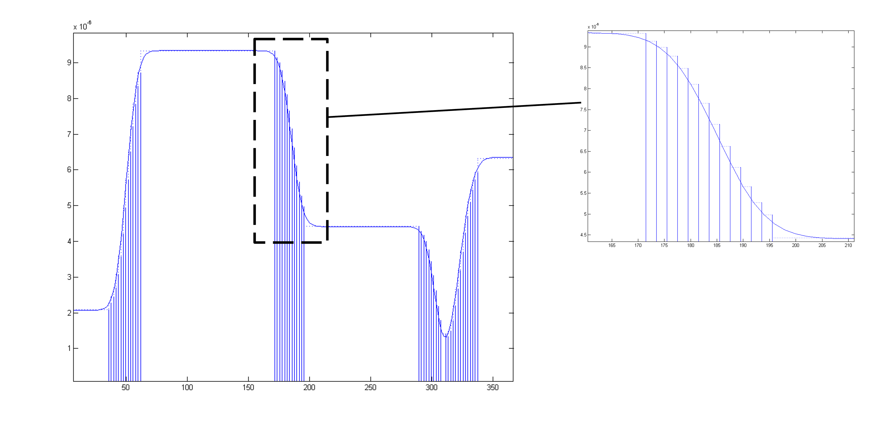
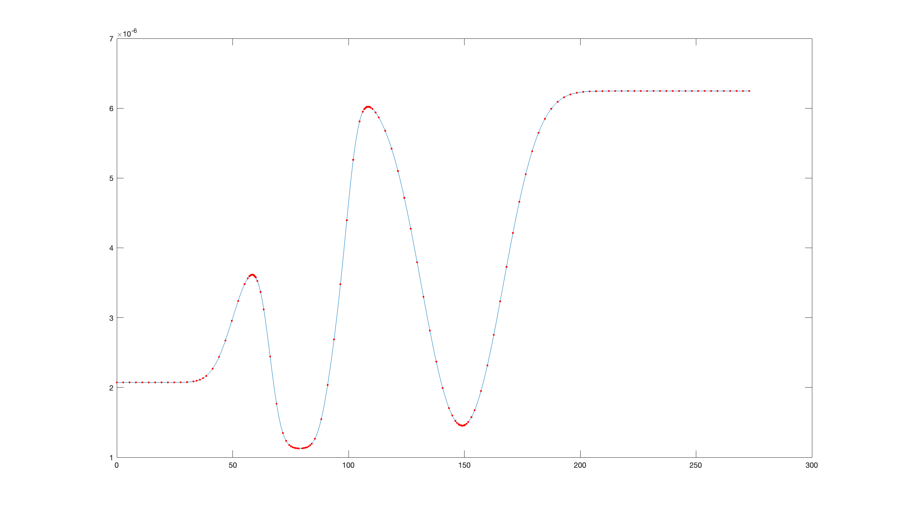
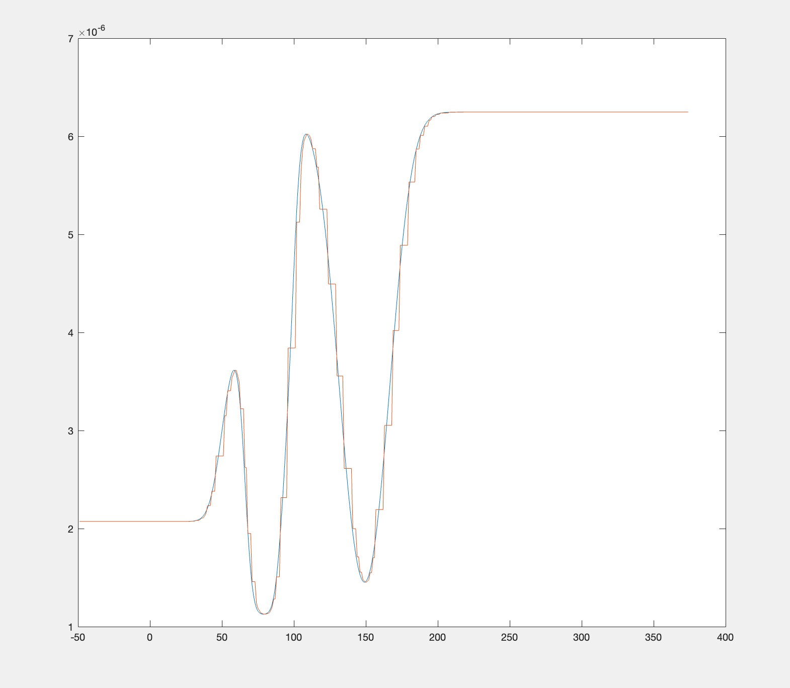

Profile Resampling (‘microslicing’)#
The Nevot-Croce roughness approximation only strictly holds for cases where the interface roughness is much less than the layer thickness. This usual way of handling cases where there are such layers, is to split the interfaces into a large number of layers of zero roughness, so that the roughness problem is circumvented:
{kind=link}
However, this kind of ‘dumb microslicing’ causes the creation of a large number of layers, which may not all be necessary and will significantly slow down the calculation.
This problem of finding the lowest number of individual points that will completely describe a waveform is a common problem in signal processing. RAT uses a technique borrowed from SP called Adaptive Resampling (AR).
AR is an interactive process which aims to find the lowest number of points that will best describe a curve. It does this by adding points where the angle between neighbouring points becomes greater than a threshold value. So, it adds more points where the signal is changing most strongly (in order to capture all details of the curvature). So, for a cosine wave, the resampled points cluster at the regions of the largest curvature:

So, for the continuous cosine curve show in blue, the AR algorithm has chosen the red points as being most representative. In other words, if the red points were joined with straight lines, the resulting curve would be very similar to the original signal. The salient point is that more points are required where the gradient of the signal is changing quickly, and those where the gradient is constant can be represented by fewer points.
RAT borrows the AR trick from the signal processors, and uses this method to resample the SLD profiles. The AR algorithm is used to find the best series of points that will represent the profile most accurately, and then each of these points is taken as the centre of layer (of zero roughness). The thickness of each layer is half the distance between neighbouring points. So, for an SLD profile of a floating bilayer (blue line), AR selects the red points:
{kind=link}
..which are then converted into a set of zero roughness layers:
{kind=link}
Using Resampling in RAT Using resampling on a contrast in RAT is very simple. For any contrast that you want to reample, then simply set the ‘resample’ flag for that contrast to ‘true’
problem.setContrast(1, 'resample', true);
problem.contrasts.set_fields(0, resample=True)
p 1 2
___________________ _______________________ ________________________
"Name" "D-tail/H-Head/D2O" "H-tail/D-Head/ACMW"
"Data" "D-tail / H-head / D2O" "H-tail / D-head / ACMW"
"Background" "Background D2O" "Background ACMW"
"Background Action" "add" "add"
"Bulk in" "SLD Air" "SLD Air"
"Bulk out" "SLD D2O" "SLD ACMW"
"Scalefactor" "Scalefactor 1" "Scalefactor 1"
"Resolution" "Resolution 1" "Resolution 1"
"Resample" "true" "false"
"Model" "Deuterated Tails" "Hydrogenated Tails"
"" "Hydrogenated Heads" "Deuterated Heads"
+-------+--------------------+-----------------------+-----------------+-------------------+---------+----------+---------------+--------------+----------+--------------------+
| index | name | data | background | background action | bulk in | bulk out | scalefactor | resolution | resample | model |
+-------+--------------------+-----------------------+-----------------+-------------------+---------+----------+---------------+--------------+----------+--------------------+
| 0 | D-tail/H-Head/D2O | D-tail / H-head / D2O | Background D2O | add | SLD Air | SLD D2O | Scalefactor 1 | Resolution 1 | True | Deuterated Tails |
| | | | | | | | | | | Hydrogenated Heads |
| 1 | H-tail/D-Head/ACMW | D-tail / H-head / D2O | Background ACMW | add | SLD Air | SLD ACMW | Scalefactor 1 | Resolution 1 | False | Hydrogenated Tails |
| | | | | | | | | | | Deuterated Heads |
+-------+--------------------+-----------------------+-----------------+-------------------+---------+----------+---------------+--------------+----------+--------------------+
The resampling itself is controlled by the ‘resamPars’ field in the controls block:
controlsClass with properties:
parallel: 'single'
procedure: 'calculate'
calcSldDuringFit: 0
display: 'iter'
resampleMinAngle: 0.9000
resampleNPoints: 50
+------------------+-----------+
| Property | Value |
+------------------+-----------+
| procedure | calculate |
| parallel | single |
| calcSldDuringFit | False |
| resampleMinAngle | 0.9 |
| resampleNPoints | 50 |
| display | iter |
+------------------+-----------+
The resampPars field has two parameters in it, corresponding to the minimum angle and minimum points (resamPars = [minAngle minPoints]) which to use to resample the profiles. These have the following effects:
minAngle: The algorithm refines near the points which form, together with their left and right neighbours, a triangle with central angle smaller than the given value. So, a larger value of minAngle results in a finer resampling. minAngle is defined as a multiple of pi (i.e. minAngle = 0.9 refines where the adjacent points form an angle greater than 0.9 * pi)
nPoints: The initial number of domain points (layers). The algorithm will start from this number of layers, and refine until all the minAngle criteria are satisfied.
Note
Generally, minAngle has a larger effect on the eventual resampling than nPoints.